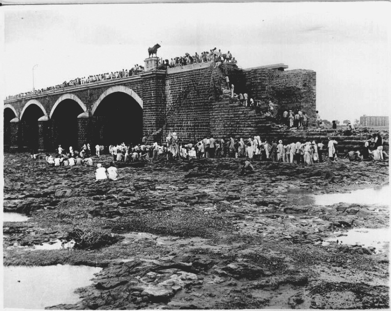

The Morbi Dam Failure
A System Overwhelmed: In early August 1979, the Saurashtra region of Gujarat, India, was battered by unprecedented and unrelenting monsoon rains. The Machchhu-II Dam, an earthen gravity dam built to supply water for irrigation, was designed to handle typical seasonal downpours, but the massive volume of water pouring into its reservoir quickly dwarfed the engineers' worst-case scenario calculations. The dam's spillway capacity was simply inadequate to release the massive influx of floodwaters, causing the water level to rise dangerously high against the vulnerable earthen embankments.

The Wall of Water: On the afternoon of August 11, the tremendous hydraulic pressure finally overcame the structure's physical limits. The earthen walls flanking the main masonry spillway disintegrated, unleashing a catastrophic deluge. A towering wall of water—described by survivors as a tidal wave—roared down the river valley. Within minutes, the furious torrent slammed into the industrial town of Morbi, located just a few miles downstream. The floodwaters hit with unimaginable force, instantly wiping entire neighborhoods off the map, sweeping away densely populated settlements, and snapping concrete bridges like twigs. Residents had virtually no warning and no time to escape to higher ground.
Key Facts
Date: August 11, 1979
Location: Morbi, Gujarat, India
Casualties: Thousands killed (estimates range widely from 1,800 to 25,000); complete devastation of Morbi town, destroying homes, vital infrastructure, and agricultural lands.
Cause: Unprecedented monsoon rainfall that vastly exceeded the dam's structural capacity and spillway design, leading to the overtopping and catastrophic collapse of the earthen walls.
The Morbi dam collapse stands as one of the deadliest structural failures in modern history. The staggering loss of life—with official counts citing around 1,800 to 5,000 dead, while unofficial estimates range up to 25,000 due to unrecorded transient populations—exposed the catastrophic consequences of underestimating extreme weather events. The tragedy served as a harsh wake-up call for global civil engineering, forcing a critical re-evaluation of hydrological modeling. It highlighted the absolute necessity of designing spillways that can handle unprecedented "super-floods" and the urgent need for robust early warning systems for communities living in the shadow of critical infrastructure.